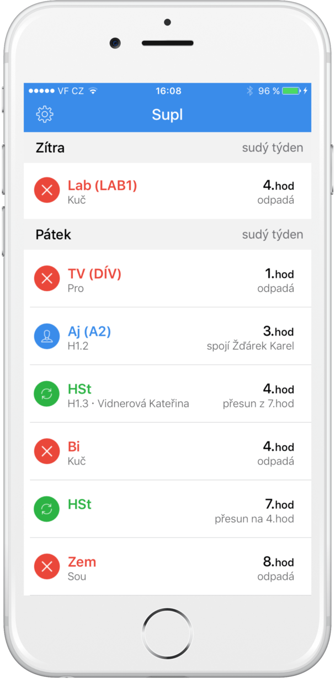
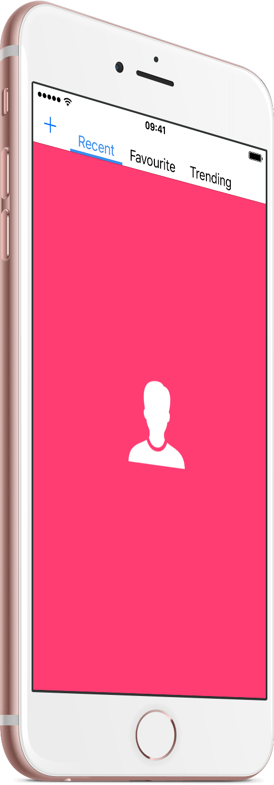

PORTFOLIO
Supl
Supl is an iOS app for many Czech students. It uses Bakalari system to and it not only enables the user to see any changes in his school schedule but the app automatically notifies him.
Available on App Store

Supl
Supl is an iOS app for many Czech students. It uses Bakalari system to and it not only enables the user to see any changes in his school schedule but the app automatically notifies him.
Available on App Store